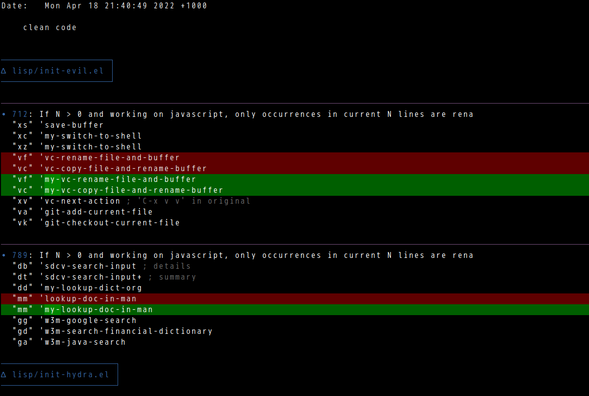

Integrate delta into git
Delta is a syntax-highlighting pager for git, diff, and grep output.
Set up is as simple as copying its sample setup.
I wrote a shell script my-pager which can use both less and delta as pager,
#!/bin/bash
# @see https://stackoverflow.com/questions/19408649/pipe-input-into-a-script
if [ -x "$HOME/.cargo/bin/delta" ]; then
cat | $HOME/.cargo/bin/delta "$@"
else
cat | less -F -X
fi
Here is my extra delta setup in ~/.gitconfig (Delta reads settings from ~/.gitconfig),
[core]
pager = ~/bin/my-pager
[interactive]
diffFilter = ~/bin/my-pager --color-only
[merge]
conflictstyle = diff3
[diff]
colorMoved = default
[delta "default"]
file-decoration-style= blue box
hunk-header-decoration-style = purple ol
[delta]
features = default
navigate = true # use n and N to move between diff sections
Screenshot, 